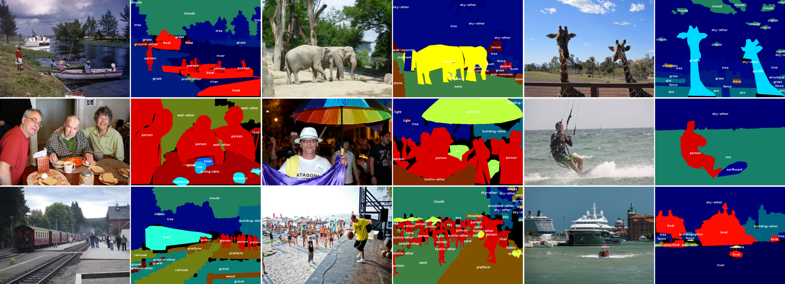

/data
데이터에 관련된 파일들을 저장한 폴더 입니다.
9k.label: YOLO9000 dataset label9k.names: YOLO9000 dataset names9k.tree: YOLO9000 tree 정보(label:tree번호)coco.names: coco dataset names(80개)coco9k.map: coco를 tree에 결합한 정보(tree번호)imagenet.label.list: imagenet dataset labelimagenet.shortnames.list: imagenet dataset namesvoc.names: voc dataset namesopenimages.names: openimages dataset namesinet9k.map: imagenet을 tree에 결합한 정보
/data/labels
알파벳 이미지가 다양한 크기별로 들어있는 폴더 입니다.
이미지에 라벨을 그리기 위한 용도 입니다.
Dataset
Object Detection에서 가장 많이 사용되는 데이터셋은 대표적으로ImageNet,Pascal VOC,COCO가 있습니다.
ImageNet
Homepage : http://www.image-net.org/
ILSVRC : http://www.image-net.org/challenges/LSVRC/
ImageNet 프로젝트는 시각적 객체 인식 소프트웨어 연구에 사용하도록 설계된 대형 시각적 데이터베이스입니다.
현재 1000만개 이상의 이미지가 수집되었습니다.
20000개 이상의 클래스를 가지고 있습니다.
ImageNet을 바탕으로
ILSVRC(ImageNet Large Scale Visual Recognition Challeng)라는 이미지 인식 대회가 열립니다.ILSVRC는 대회를 위해서 1000개의 클래스로 구성 됩니다.
보통 ILSVRC는 2012년도 데이터셋으로 가장 많이 벤치마킹 됩니다.
Pascal VOC
Homepage : http://host.robots.ox.ac.uk/pascal/VOC/
Pascal VOC는 object class recognition을 위한 표준화된 이미지 데이터셋 입니다.
보통 Pascal VOC는 2007년도 데이터셋으로 가장 많이 벤치마킹 됩니다.
CLASS
- Person: person
- Animal: bird, cat, cow, dog, horse, sheep
- Vehicle: aeroplane, bicycle, boat, bus, car, motorbike, train
- Indoor: bottle, chair, dining table, potted plant, sofa, tv/monitor
COCO
Homepage : http://cocodataset.org/#home
API : https://github.com/cocodataset/cocoapi
사용법 : https://jjeamin.github.io/info/2019/06/20/coco_api/
COCO는 Object Detection, Segmentation, Captioning을 위한 데이터셋 입니다.
33만개의 이미지를 가지고 있습니다.
150만개의 Object instances를 포함합니다.
80개의 object 클래스가 있습니다.
91개의 stuff 클래스가 있습니다.
25만명 사람에 keypoint가 annotation 되어 있습니다.
이미지당 5개의 caption이 있습니다.

CIFAR
Homepage : https://www.cs.toronto.edu/~kriz/cifar.html
- 이미지 분류를 위해 사용되는 데이터셋 입니다.
- 모든 이미지의 크기는
32 x 32입니다.
CIFAR10
- 10 클래스
- train : 50000 (클래스 당 5000개의 이미지)
- test : 10000 (클래스 당 1000개의 이미지)
CIFAR100
- 100 클래스
- train : 50000 (클래스 당 500개의 이미지)
- test : 10000 (클래스 당 100개의 이미지)
Openimage
Homepage : https://storage.googleapis.com/openimages/web/index.html
- 구글이 만든 매우 거대한 데이터셋 입니다.
- 현재 V6 까지 나와 있습니다.
- 600개의 클래스에 15,851,536개의 box를 가지고 있습니다.
- 350개의 클래스에 2,785,498개의 box를 가지고 있습니다.
- 19957개의 클래스에 59,919,574개의 이미지 라벨을 가지고 있습니다.
- 507,444개의 Localized narratives가 있습니다.
- 1,466개의 관계에 3,284,282개의 관계 주석이 있습니다.